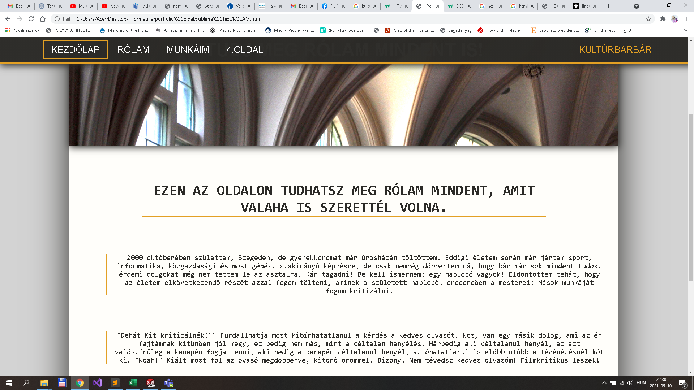

Hogyan készült?
Gyakorlatilag majdnem kezdő vagyok a html és css programozáshoz. A hátterem leírható abban, hogy egyszer megpróbálkoztam egy menüsor leprogramozásában, majd eldöntöttem, hogy soha többet nem nyúlok a nyelvhez.
Van egy olyan elképzelésem, hogy ha valamihez nagyon nem ért az ember, akkor a legjobb dolog amit tehet, az az, hogy fejjel megy a falnak, és reménykedik a csodában. Én is ezen elgondolás alapján kezdtem neki az oldal elkészítésének. Megnéztem egy gépinfós előadásvideót (amiről akkor még nem tudtam, hogy több is van) majd az informatika tudás szent gráljához fordultam: Az Indiai youtube tutorialokhoz. Nem sokkal később neki is álltam a pötyögésnek.
Számomra a legnagyobb nehézség a nyelvvel kapcsolatban az a container-rendszer. Az, hogy pontosan mit, hova, hogyan kell elhelyezni a html kódban ahhoz, hogy a css-ben jól lehessen kezelni, illetve, hogy a css-ben éppen melyik containerben kell megformáznom az oldal elrendezkedését.
Az indiai videók és a stackoverflow mellett próba-szerencse úton tanultam, ha valami nem működött, akkor gyakran az volt az első dolgom, hogy beleraktam egy div-be, aztán még egybe, aztán megint, és megint, és így tovább...
Bár a filozófiám azóta ezzel a módszerrel kapcsolatban változott(kiderült ugyanis, hogy nem túl effektív), tapasztaltabb olvasóknak valószínűleg így is szemet szúrhat a néhol talán most is indokolatlan mennyiségű container halmaz és a túlírt css-kód.

És akkor ott van maga a szintaxis. A html nem túl komplikált, nem tartott sokáig amíg leesett, hogy majdnem minden, ami két kacsacsőr között van és piros az gyakorlatilag div, akkor is, ha nem az a neve. Ellenben a css egészen más. A legnagyobb gond az volt, hogy css-ben egészen egyszerű dolgokat is látszólag többféle képpen meg lehet oldani, nincsen egy "jó" megoldás. Ha C#-ban valami elromlik, akkor a program le sem fut, vagy legalább lefagyasztja a gépet, de a css bármikor lefut, legfeljebb úgy néz ki az oldal, mint egy minimalista festmény. Ekkor elkezdem sorra próbálgatni, hogy mi absolute, mi relative, sticky, vagy fixed, margin így, margin úgy, és a többi, míg végül összejön egy használható kombináció.
Az oldal dizájnról annyit, hogy nem volt B-terv, A sem. Gyakorlatilag ezen az oldalon kezdtem hozzá a kódoláshoz és az alapján alakult, hogy éppen mit olvastam a fórumos kalandozásaim során. Végül a html kód felépítése a következőként alakult:
Az alap 3 nagy blokk: nav, main (Kontent) és footer (Labjegyzet). Ezek mindegyike benne van a body-ban. A nav és a footer minden oldalon azonos, a kialakításuk mind az "Alap" nevű css fileban van. A Kontent értelemszerűen minden oldalon más, de az alapban vannak kiinduló beállítások rá vonatkozóan. Az oldal responsive. A menü és a footer 700px-es szélesség alatt más beállításokon üzemel, hogy kis képernyőszélességen is kiférjen minden, Pl: 700px felett a menü sticky, és hosszában terül el, míg alatta helyben marad és hosszában van sorolva, továbbá a kontent 700 alatt nem rendelkezik margóval, teljesen felveszi a rendelkezésre álló szélességet.
Végezetül pár forrás, ami hasznosnak bizonyult:
https://www.youtube.com/channel/UCkjoHfkLEy7ZT4bA2myJ8xA
Pár oldal, ami megiheletett:
És a felhasznált képek:
https://i.pinimg.com/564x/13/c0/86/13c086ead5894d156dd315213fc0f9c9.jpg
{kind=link}
https://i.pinimg.com/564x/80/b8/a4/80b8a4d264ca5d2eb31fd8677cbaea0a.jpg
{kind=link}
https://i.pinimg.com/564x/2c/c0/ac/2cc0ac2ad0e977de3b0df59415ed16ed.jpg
{kind=link}
https://i.pinimg.com/564x/65/57/4d/65574d62ffb0cd14e4cd67cdaf55d9af.jpg
{kind=link}
https://i.pinimg.com/564x/fa/31/dd/fa31dd4e31598995ac590eeb892c4dd2.jpg
{kind=link}
https://flxt.tmsimg.com/assets/p34931_p_v8_am.jpg
{kind=link}
http://www.goethe.de/resources/files/jpg881/nosferatu1-formatkey-jpg-w983m.jpg
{kind=link}
https://i.pinimg.com/564x/09/cd/37/09cd3751f9e59f3bc82b982059e7b1c8.jpg
{kind=link}
https://upload.wikimedia.org/wikipedia/commons/9/9f/BME_Olvas%C3%B3.jpg
{kind=link}